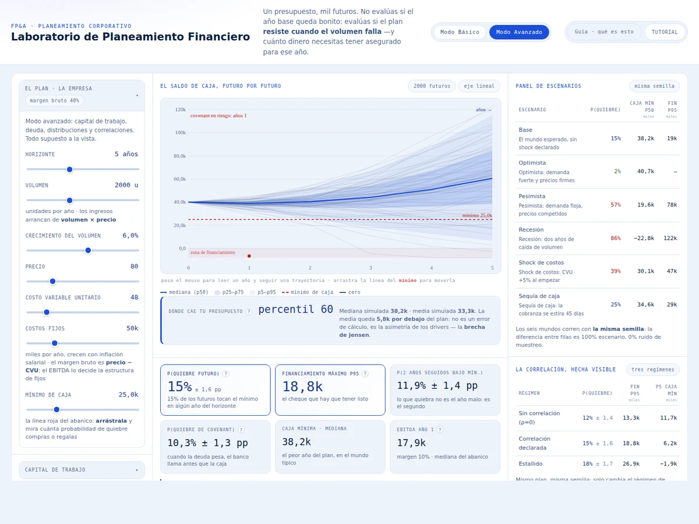
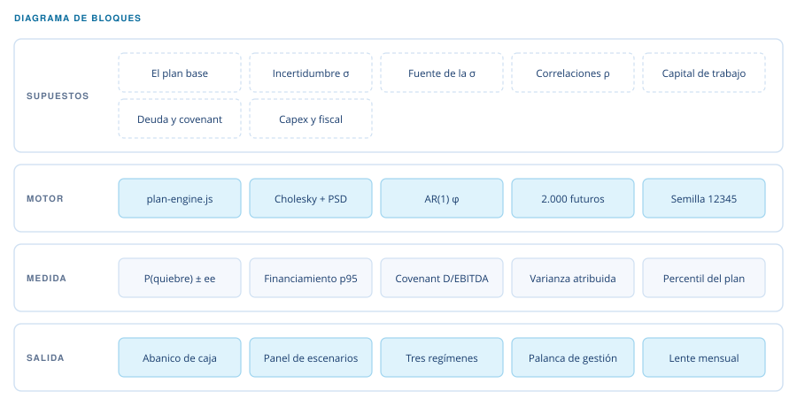

FP&A — planeamiento por escenarios
Laboratorio de Planeamiento Financiero
Presupuesto por escenarios: la distribución que un solo número esconde, y cuánta plata hay que tener arreglada para el año malo.

Qué hace
Simula los drivers del negocio —volumen, precio, costo variable, costos fijos, rotaciones de capital de trabajo y tipo de cambio— miles de veces, y donde un presupuesto entrega un solo número entrega una distribución. Con ella responde lo que ese número no puede: con qué probabilidad se rompe la caja, cuánto financiamiento hay que tener arreglado para el peor escenario razonable, y qué supuesto explica la mayor parte de la dispersión.
Los drivers se correlacionan por descomposición de Cholesky y cada sigma declara de dónde sale su calibración: volatilidad histórica, rango experto o dato de mercado. Hay un régimen de estrés donde las correlaciones se acercan a uno, que es lo que ocurre cuando las cosas se rompen de verdad. Los escenarios corren con la misma semilla, de modo que la diferencia entre ellos es escenario y no ruido de muestreo.
El concepto. El error de principiante es ponerle una distribución al resultado, al EBITDA o a la utilidad. Lo correcto es ponerle distribuciones a los drivers y dejar que la aritmética del modelo produzca el estado de resultados y la caja. Eso es lo que convierte un generador de números aleatorios en un modelo de planeamiento.
- JavaScript sin framework
- SVG
- Simulación Monte Carlo
- Pruebas en Node
Un caso con números fijos
La guía trae un caso reproducible: una empresa de uniformes que vende 2.000 unidades al año a 80, con costo variable de 48 y fijos de 50 mil —margen bruto del 40 % y un EBITDA de 14 mil—, que planea crecer 6 % anual durante cinco años. Cobra a 45 días, mantiene 30 de inventario, paga a 30 e invierte 4 % de los ingresos en capex. El enlace de esa sección lleva los 45 parámetros, así que la corrida se repite: 2.000 futuros con la misma semilla devuelven siempre estos números.
Quiebre de caja: 15 % ± 1,6 pp
Uno de cada siete futuros toca el mínimo de tesorería en algún año del horizonte.
Financiamiento p95: 18,8k
El cheque que hay que tener listo antes del año malo, no después.
El plan cae en el percentil 60
El presupuesto no es neutral: es apenas optimista dentro de su propia distribución.
Covenant: 10,3 % ± 1,3 pp
Deuda/EBITDA rompe antes que la caja: el banco llama primero que la tesorería.
Ahí está la tensión que justifica la herramienta: el plan determinista nunca baja de 39,1k, catorce mil por encima del mínimo, y aun así uno de cada siete futuros lo toca. Un presupuesto de una sola hoja habría dicho que no hay problema.
La atribución de varianza cierra el diagnóstico —58 % de la dispersión de la caja mínima sale de la inflación del costo, contra 24 % del volumen y 18 % del precio: la conversación con compras vale más que la conversación con ventas— y el panel de acción le pone precio a la decisión. Cobrar quince días antes, de 45 a 30 de DSO, baja el quiebre de 15 % a 13 % y el financiamiento p95 de 18,8k a 16,4k, sobre los mismos 2.000 futuros. Dos puntos de riesgo y 2,5k de línea de crédito, por una gestión de cobranza.
Cómo está compuesto
El motor es una función pura: recibe supuestos, devuelve resultados y no toca el DOM. Por eso la batería corre en Node, fuera del navegador, y el tablero se puede romper sin romper la matemática.

Se simulan los drivers
Nunca el resultado: la aritmética del modelo produce el estado de resultados y la caja.
Misma semilla, mismo mundo
El orden de sorteo es fijo, así que congelar un driver no mueve a los demás y los escenarios se comparan entre sí.
Cada sigma declara su fuente
Volatilidad histórica, rango experto convertido por PERT o dato de mercado. Un supuesto sin origen no se puede defender.
La caja negativa se mide
No se tapa: es financiamiento requerido, y es exactamente el número que se lleva al banco.
Qué está verificado
Cuatro baterías, todas verdes en la versión publicada. La del motor comprueba AR(1), descomposición de Cholesky con reparación PSD, tratamiento fiscal con arrastre de pérdidas, capex y cierre de caja, con los números a la vista: 62 comprobaciones en la batería interna del motor, 19 en la suite de simulación y 14 en el lente mensual, todas en Node. La cuarta corre en el navegador y cubre la costura entre el motor y el tablero: 87 comprobaciones que se ejecutan después del primer render, de modo que la batería no puede dar verde sobre una página que no llegó a dibujarse.
El caso de la guía funciona como prueba de regresión: los tres números que el texto declara son los que devuelve esa corrida con su semilla, así que cualquier cambio en el motor que los mueva se nota de inmediato.